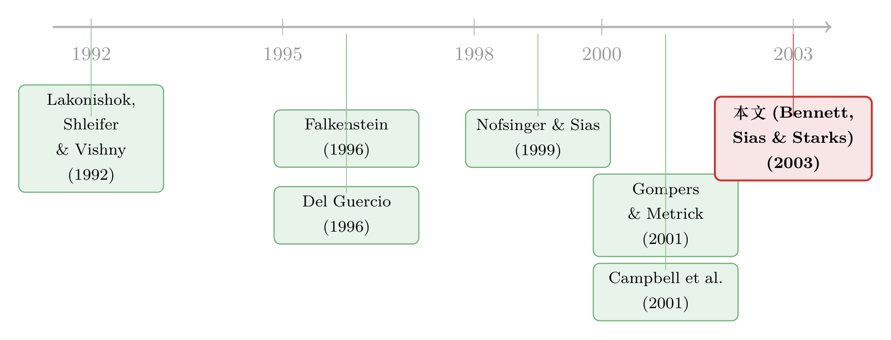

机构投资者搬家了：他们为什么从「大盘股」走向「小而险」的草地
本文读的是 Bennett, Sias & Starks (2003, Review of Financial Studies)：机构投资者对「大、稳、贵」股票的偏好，在 1983–1997 这十五年里悄悄滑向了「小、险、便宜」的股票；而且这个转向 93% 来自每一类机构自己改了口味，只有 4% 来自不同机构此消彼长。这一搬家，恰好赶上机构持股的整体膨胀，把更多的换手率和公司特质波动「灌」进了小盘股——它们追的，是「更绿的草地」。
1 一个被忽略的「动」字
关于机构投资者，金融学里有一条几乎人尽皆知的「定理」：他们偏爱大盘股。Badrinath, Kale and Ryan (1996)、Del Guercio (1996)、Falkenstein (1996)、Gompers and Metrick (2001) 一篇接一篇地证实——机构持股比例与公司的市值、流动性、股价水平之间，存在着稳定而显著的正相关。机构像是一群挑剔的食客，只在大盘股这张桌子上落座。
这个结论太稳了，稳到大家几乎忘了去追问一个问题：这张「偏好表」，会不会随时间变化？
绝大多数研究都是横截面的（cross-sectional）——某一个时点上，机构持股和公司特征怎么相关。这就像给一群人拍了一张合影，你能看清谁高谁矮，却看不出谁在长个子、谁在变老。Bennett, Sias and Starks（下称 BSS）这篇 2003 年发在 RFS 上的文章，做的恰恰是把这张合影换成一段十五年的延时摄影。他们一口气问了四个问题：
- 机构的总体偏好（aggregate preference）会随时间变化吗？
- 如果变了，是因为每类机构自己改了口味，还是因为不同类型机构的相对重要性变了？
- 这种偏好的转移，会不会反过来冲击证券市场？
- 机构的偏好，到底为什么会变？
四个问题环环相扣。而真正让这篇文章站住脚的，是回答它们之前必须先迈过的一道方法论的坎。
2 识别策略：先把尺子校准
要比较「1983 年的偏好」和「1997 年的偏好」，你得先有一把刻度不变的尺子。可普通回归的系数恰恰是把会伸缩的尺子。
设想我们每个季度都做一次横截面回归，把机构持股比例 y 回归在公司的九个特征上：
$$\hat{y}_i = b_0 + b_1 x_{i1} + b_2 x_{i2} + \cdots + b_j x_{ij}$$
问题来了：在样本期内，机构总持股比例翻了一倍（从约 23% 到 31%）。哪怕机构对「股价水平」的偏好分毫未变——即股价与持股比例的相关系数纹丝不动——只要持股比例本身翻倍，回归系数 b_j 也会跟着翻倍。再加上各个特征自身的量纲（size 是市值的对数、turnover 是个比率）在变，跨时间、跨机构类型直接比较原始系数，几乎是没有意义的。
BSS 的解法朴素而关键：每个季度，把自变量和因变量都标准化（standardize），让它们都变成均值为零、标准差为一。于是回归式 (1) 可以改写成标准化的形式：
记 \(\beta_j = b_j s_j / s_y\)，这就是文中反复出现的标准化回归系数。它的含义干净利落：特征 j 每变动一个标准差，机构持股比例期望变动 \(\beta_j\) 个标准差。因为标准化只是线性缩放，相关系数、t 值、回归的 \(R^2\) 全部不变；变的只是系数有了可比性——跨时间、跨机构、跨特征，都能直接放在一起比。
这一步看似只是技术细节，却是全文一切结论的地基。校准好尺子，才谈得上量出「搬家」。
3 数据
数据来自两处。公司特征取自 CRSP 月度数据；机构持股则来自 CDA Spectrum 整理的 13F 申报——美国所有管理 1 亿美元以上股票资产的机构，都必须按季度向 SEC 报告持仓。样本覆盖 1983 年 3 月到 1997 年 12 月，共 60 个季度，纳入所有数据齐备的 NYSE、AMEX、Nasdaq 股票，公司数从 1983 年一季度的 4,345 家增长到 1997 年四季度的 6,779 家。
观测单位是「公司—季度」。九个特征分三组：三个风险度量（beta、收益率标准差、公司特质波动率），三个对应机构投资约束的度量（公司规模、公司年龄、股息率），两个流动性度量（股价、换手率），外加一个控制动量交易的滞后收益。CDA 还把机构分成五类：银行信托部、保险公司、共同基金、独立投资顾问、以及其他（未分类）。
样本期内，机构平均持有每家公司 23% 的股份；到 1997 年底升到约 31%。注意，这和引言里「50%」的口径不同——后者是按市值加权的，因为机构在大盘股里持股比例更高。事实上，到 1997 年 12 月，机构控制的市值占比最高摸到了 53%：专业投资者，已经握住了半个市场。
4 主要结果之一：他们确实搬家了
把 60 个季度的标准化系数排成时间序列，故事就显形了。这些横截面回归解释力相当强，平均 \(R^2\) 达 51.05%。
全样本期看，机构的偏好画像一目了然（表 3）：最爱的是规模（\(\beta_{size}=0.4377\)）和高股价（\(\beta_{price}=0.2912\)），其次是公司年龄（0.1012）和换手率（0.1378）；而对股息率（-0.0920）和滞后收益（-0.0987）则是负偏好。一句话——大、老、贵、流动性好的股票，机构偏爱。
但真正的看点在子样本对比。BSS 把 60 个季度劈成前后两半（各 30 季），对每个系数做了均值差异的 z 检验。结果是几处显著的「漂移」：
- 规模偏好显著下降：从前半段的
0.4920掉到后半段的0.3835（z = −5.40）； - 对收益率标准差的偏好显著上升：从几乎为零的
0.0037跳到0.1324（z = 6.65）； - 对股息率的负偏好进一步加深：从
−0.0716到−0.1124（z = −4.50）； - 对股价的偏好反而上升（z = 6.63），换手率偏好略降（z = −2.62）。
把这几条放在一起读：机构在减持对「大」的执念，增持对「波动」的胃口，更不在乎分红。这正是从「大、稳」走向「小、险」的指纹。他们搬家了，搬向了更小、风险更高的那片草地。
5 真正关键的一步：是谁在搬家？
接着，一个自然的问题是：总体偏好的转向，到底是因为每一类机构自己改了口味，还是仅仅因为口味不同的各类机构此消彼长？
这两种解释截然不同。想象总体偏好是五类机构偏好的加权平均，权重就是各类机构的相对重要性。那么总体偏好的变化，可以来自两个源头：权重在变（比如偏好小盘股的共同基金份额暴涨，把平均值往小盘股方向拽），或者每类机构的偏好本身在变。从图 1 看，样本期内机构的增长大部分来自独立投资顾问；银行信托部虽占比大，但在 1990 年代相对式微；共同基金则从 1990 年起强劲增长——可见权重确实在动。所以两种解释都不能先验排除。
但真正关键的一步，是 BSS 做了一个方差分解（variance decomposition），把总体偏好的时间序列方差，拆成「相对重要性变化」「各类偏好变化」「以及二者的交互」三块。结果干净得出人意料：
93% 的总体偏好时间序列变动，来自各类机构自身偏好的改变；只有 4% 来自不同类型机构相对重要性的变化；剩下 3% 是交互效应。
这是全文的核心反转。表面上看，是「共同基金崛起、银行信托退场」这样的结构洗牌在重塑机构的整体面貌；可一旦量化，结构洗牌几乎无关紧要——真正发生的，是银行、保险、基金、投顾们，几乎不约而同地，各自把目光从大盘股移开了。这不是几类人互相替换的错觉，而是一场行业级别的集体转向。
6 搬家的代价：被「灌满」的小盘股
第三个问题：这场搬家会冲击市场吗？
这里 BSS 把两件事叠在一起。其一，机构持股在整体膨胀；其二，他们的偏好在向小盘股倾斜。两股力量合流，会有什么后果？同期有两篇文章记录了一组令人费解的事实：Chordia, Roll and Subrahmanyam (2001) 发现市场换手率在系统性攀升，Campbell, Lettau, Malkiel and Xu (2001) 则发现个股的公司特质波动率（firm-specific volatility）在过去二十年里持续上升。BSS 的假说是：机构持股的增长，可能正是推手之一；而且既然机构在往小盘股搬，那么换手率和特质波动的上升，理应在小盘股里更剧烈。
证据与两个假说都吻合：后续的换手率与特质波动率，都与滞后的机构持股变化正相关；而且无论是换手率还是特质波动的上升，都在小市值股票里更为显著。机构搬到哪里，就把交易的喧嚣和价格的抖动带到哪里。
这条「机构持股 → 流动性与波动」的因果暗线，和股债流动性如何同呼吸是同一个家族的问题。关于市场层面流动性的共同变动，可参见《市场快「干涸」的那一刻：股与债的流动性，原来听的是同一个人》。
7 最后一问：为什么是「更绿的草地」
第四个问题最难，也最有意思：机构为什么要搬家？
BSS 给了两个并不互斥的解释，统称「greener pastures」（更绿的草地）。
第一，需求冲击说。 这是 Gompers and Metrick (2001) 的逻辑：机构历来偏爱大盘股，随着机构资金涌入，对大盘股的需求冲击抬高了它们的估值（等价地说，正是机构的需求冲击让「小公司效应」在近年消失了）。BSS 的证据支持这一点——他们发现，伴随机构化的推进，大公司的账面市值比显著下降，于是小公司的估值相对变得更诱人。同时，未来收益与当前机构持股水平正相关，这正是需求冲击留下的脚印。
第二，信息优势说。 但 BSS 不止步于此。即便控制了机构持股水平（作为需求冲击的代理），机构需求的变化仍能预测未来收益——这意味着机构不只是被动地推高价格，他们还看得更准。不过这个结论对「如何度量需求变化」很敏感：用机构持股比例的变化几乎预测不动，但用 Lakonishok, Shleifer and Vishny (1992) 的机构羊群度量（herding measure），就能在控制了公司特征和持股水平之后，仍然预测未来收益。更妙的是，机构这种预测能力，与市值成反比——公司越小，他们的信息优势越大。
两种解释殊途同归：小盘股之所以成了「更绿的草地」，要么是因为它们估值相对更便宜，要么是因为它们给了机构更大的施展信息优势的空间。机构搬家，不是心血来潮，而是逐水草而居。
这里有个值得记住的脚注。Chan, Chen and Lakonishok (2002) 提醒：风格转移未必都源自对风险调整后业绩的追逐，也可能是代理与行为问题——他们发现业绩差的基金更可能改变「风格」。换言之，「搬家」背后，理性的觅食和非理性的病急乱投医，可能掺在一起。
8 文献脉络
这条研究线，是从「机构偏好」这个静态横截面命题里，一点点长出「动态」与「冲击」两个维度的。
最早，人们关心的是机构偏好什么。Falkenstein (1996) 用共同基金持仓揭示了机构对股票特征的偏好，Del Guercio (1996) 则指出「谨慎人」法规（prudent-man laws）如何扭曲了机构的持仓选择——这是横截面视角的奠基。与此同时，另一条线在追问机构怎么交易、有没有信息：Lakonishok, Shleifer and Vishny (1992) 提出了沿用至今的羊群与正反馈交易度量，Nofsinger and Sias (1999) 进一步把机构与个人投资者的羊群行为分开来看。

到了世纪之交，研究的重心转向机构对价格的影响。Gompers and Metrick (2001) 是这条线上的里程碑——他们论证机构需求冲击系统性地抬高了大盘股估值，几乎是 BSS「需求冲击说」的直接源头。而 Campbell, Lettau, Malkiel and Xu (2001) 记录的特质波动率上升，则给 BSS 提供了一个等待解释的「市场后果」。
BSS (2003) 站在这三股力量的交汇处：它把静态的偏好做成了动态序列（方法论上的标准化系数），用方差分解回答了「谁在搬家」，又把偏好转移与市场层面的流动性、波动率后果连了起来。同一批作者随后的工作把这条线推得更远——Parrino, Sias and Starks (2003) 研究机构如何在 CEO 被迫离职前后「用脚投票」（见《用脚投票：被炒掉的 CEO 背后，是谁先悄悄离场》），Sias (2003) 则把机构羊群本身做成专题（见《羊群是真的吗？——把「机构跟风」拆成跟自己和跟别人》）。
9 评论与延伸（Q&A + 研究方向）
(a) 几个可能的疑问
Q：为什么非要标准化？普通回归系数不行吗？
不行，而且这是全文成败的关键。机构总持股在样本期翻了一倍，原始回归系数会随持股规模、随特征量纲一起机械性地漂移，让「跨时间比较」变得毫无意义。标准化后系数变成「自变量变动一个标准差，y 变动几个标准差」，刻度恒定，才谈得上量出偏好的真实变化。代价是：你比较的是相对偏好（在所有公司里的排序倾向），而非绝对持股水平。
Q：93% 这个数字到底说明了什么？
它说明总体偏好转向，几乎全部来自「每类机构自己改了口味」，而非「不同口味的机构此消彼长」。这个反转很重要：如果是结构洗牌（比如基金崛起把平均值拽向小盘股），那是一个被动的加总假象；可方差分解显示，银行、保险、基金、投顾各自都在往小盘股移动。这是一场行业共识级别的转向，而不是几类玩家互相替换的错觉。
Q：「机构搬家导致小盘股波动上升」会不会是反向因果？
这是最该担心的地方。BSS 用的是「后续波动 vs. 滞后机构持股变化」的时序方向来缓解，但严格说这只是 Granger 意义上的先后，不是干净的因果。完全可能是：小盘股先因某种基本面变得更波动、更值得挖掘信息，机构才闻风而至。文章的相关证据是 suggestive 的，不是一个识别意义上的因果断言。
Q：「需求冲击」和「信息优势」两种解释，能被数据分开吗？
能部分分开。需求冲击对应的是持股水平预测收益；信息优势对应的是持股变化在控制了水平之后仍预测收益。BSS 发现后者只在用 LSV 羊群度量时成立，用持股比例变化则不成立——这说明信息优势的证据是真实的，但脆弱，对度量方式高度敏感。诚实地说，两种机制大概率同时在起作用。
Q：用 13F 数据有什么盲点？
13F 只覆盖管理 1 亿美元以上的机构，且只报多头持仓、不报空头，季度频率也偏粗。
CDA的分类还有已知瑕疵——比如同时管基金和专户的独立投顾，只要基金资产过半就被归为共同基金。所以「五类机构」的边界本身是模糊的，分类口径的噪声会渗进方差分解里。
Q：这篇 2003 年的结论，今天还成立吗？
样本止于 1997 年。此后被动投资（指数基金、ETF）的爆发，很可能改变了这幅图景——指数化的机构按市值买入，反而会强化对大盘股的「偏好」。所以「机构持续向小盘股搬家」未必是一条延续至今的趋势，更可能是特定历史阶段（主动管理扩张期）的特征。
(b) 几个可能的研究问题与提案
1. 把这套「动态偏好」框架搬到公司债市场
【经济故事】股票里机构从大盘搬向小盘，那么信用市场里呢？保险公司、债券基金对评级、久期、流动性的偏好，是否也在随监管（如 NAIC 资本规则）和低利率环境而漂移？尤其值得问：他们是否在「为收益率而下沉信用」（reach for yield）。 【可行性】中。需要 eMAXX 或保险公司 NAIC 申报的债券持仓数据 + TRACE 的债券特征。识别上可借用本文的标准化系数 + 方差分解，把「向高收益债搬家」拆成机构自身偏好变化 vs. 机构结构变化。数据可得，方法现成，doable。
2. 被动化时代的「反向搬家」
【经济故事】本文记录的是 1983–1997 主动管理扩张期的向下搬家。一个干净的后续是：2000 年后指数基金/ETF 的崛起，是否把机构总体偏好重新「拽回」大盘股？这相当于用同一把尺子，检验一个方向相反的假说。 【可行性】高。13F 数据持续可得，被动持股份额可用 Sias 类方法或 ETF 持仓估计。直接复制本文方法到 1998–2020，方差分解里新增「主动 vs. 被动」这一维度。最 doable 的一个延伸。
3. 外资机构是否有独立的「偏好动态」
【经济故事】本文的机构都是美国境内的 13F 申报人。一个自然的问题是：外资机构持有美股时，偏好画像与本土机构是否不同、随时间如何演变？这关系到「外资到底是信息劣势方还是优势方」的长期争论。 【可行性】中。13F 能区分部分外资管理人，但覆盖不全；更干净的做法是用某一国（如挪威主权基金、或 FactSet 的国别标签）的持仓。识别外资的「信息优势」可借鉴本文「持股变化预测收益」的设计。数据是瓶颈，但部分 doable。
4. 偏好转移与流动性的因果，用一次外生冲击钉死
【经济故事】本文「机构搬家 → 小盘股波动上升」是相关证据。能不能找一个外生改变机构小盘股需求的冲击（如某次指数重构、或养老金监管放松对小盘配置的限制），用它当工具变量，把因果方向钉死？ 【可行性】中偏低。难点在于找到一个只影响机构小盘需求、不直接影响小盘流动性的冲击（排他性约束）。指数重构是候选，但样本有限。值得一试，但识别风险高。
参考文献
- Badrinath, S. G., J. R. Kale, and H. E. Ryan (1996). Characteristics of Common Stock Holdings of Insurance Companies. Journal of Risk and Insurance 63, 49–76.
- Bennett, J. A., R. W. Sias, and L. T. Starks (2003). Greener Pastures and the Impact of Dynamic Institutional Preferences. Review of Financial Studies 16(4), 1203–1238.
- Campbell, J., M. Lettau, B. Malkiel, and Y. Xu (2001). Have Individual Stocks Become More Volatile? An Empirical Exploration of Idiosyncratic Risk. Journal of Finance 56, 1–43.
- Chan, L., H. Chen, and J. Lakonishok (2002). On Mutual Fund Investment Styles. Review of Financial Studies 15, 1407–1437.
- Chordia, T., R. Roll, and A. Subrahmanyam (2001). Market Liquidity and Trading Activity. Journal of Finance 56, 501–530.
- Del Guercio, D. (1996). The Distorting Effect of the Prudent-Man Laws on Institutional Equity Investment. Journal of Financial Economics 40, 31–62.
- Falkenstein, E. (1996). Preferences for Stock Characteristics as Revealed by Mutual Fund Portfolio Holdings. Journal of Finance 51, 111–135.
- Gompers, P., and A. Metrick (2001). Institutional Investors and Equity Prices. Quarterly Journal of Economics 116, 229–259.
- Lakonishok, J., A. Shleifer, and R. Vishny (1992). The Impact of Institutional Trading on Stock Prices. Journal of Financial Economics 32, 23–43.
- Nofsinger, J., and R. Sias (1999). Herding and Feedback Trading by Institutional and Individual Investors. Journal of Finance 54, 2263–2295.
- Parrino, R., R. Sias, and L. Starks (2003). Voting with Their Feet: Institutional Ownership Changes Around Forced CEO Turnover. Journal of Financial Economics 68, 3–46.
- Sias, R. (1996). Volatility and the Institutional Investor. Financial Analysts Journal 52, 13–20.
- Sias, R. (2003). Institutional Herding. Review of Financial Studies (forthcoming).
- Schwartz, R., and J. Shapiro (1992). The Challenge of Institutionalization of the Equity Market. In A. Saunders (ed.), Recent Developments in Finance, Business One Irwin, Homewood, Ill.